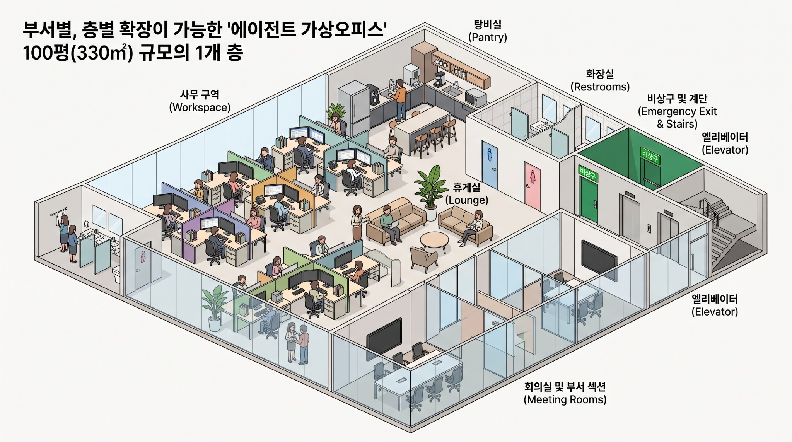

Workspace
/
3D 가상 오피스
시뮬레이션 실행 중
♧
팀장
NEXUS HQ · MULTI-FLOOR OFFICE
3D 가상 오피스
약 100평(330m²) 기준 사무실 평면을 3D 공간으로 둘러보고, 층을 추가해 확장할 수 있습니다.
← 대시보드
◎ 시점 초기화
Ⅱ 애니메이션 일시정지

1층 · 330 m²
⌖ 드래그 회전 · 휠 확대 · 터치 지원
F01
1층
＋ 층 추가
EMPLOYEE STATUS
작업 중
검토 대기
대기 중
드래그
회전
휠
줌
·
AI 직원을 클릭해 상세 정보 확인
＋
−
⌃